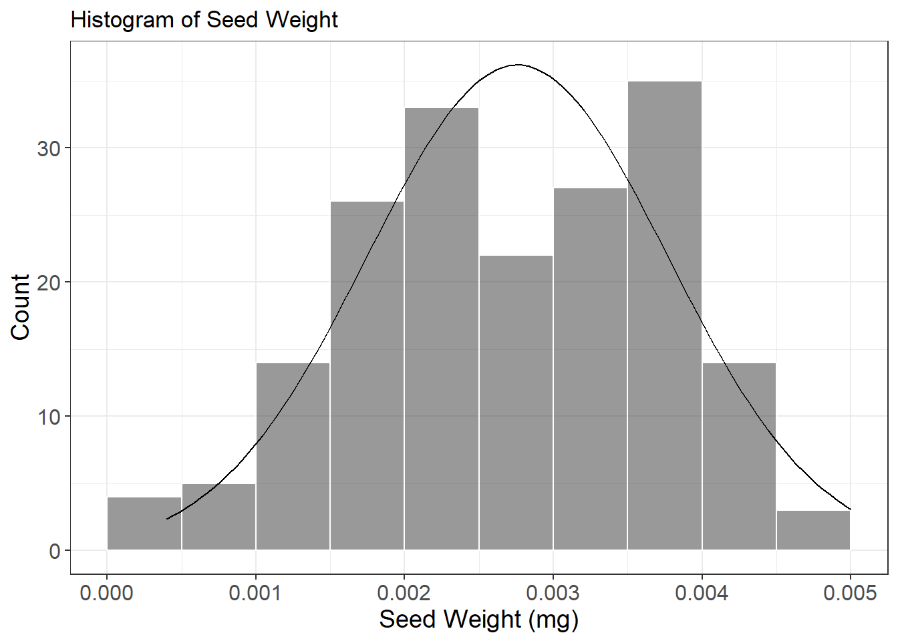
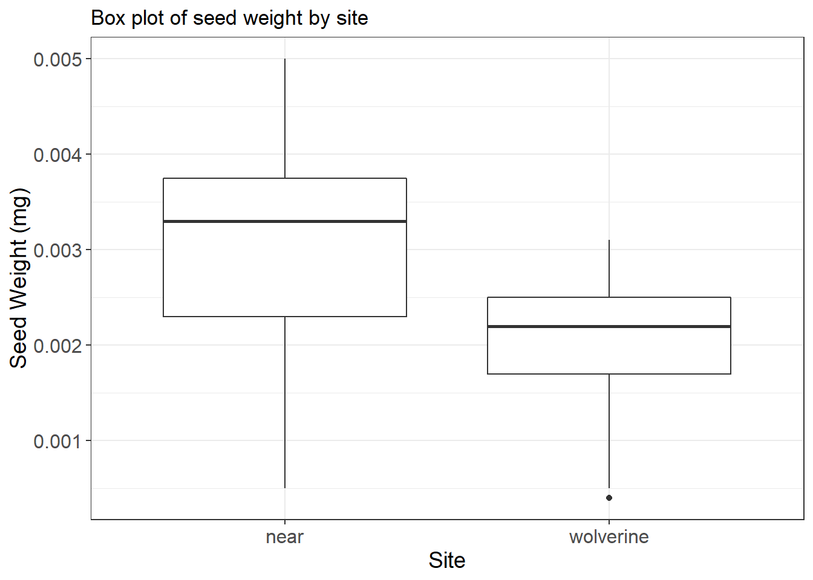
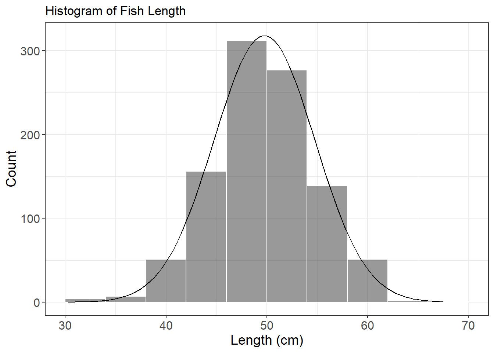
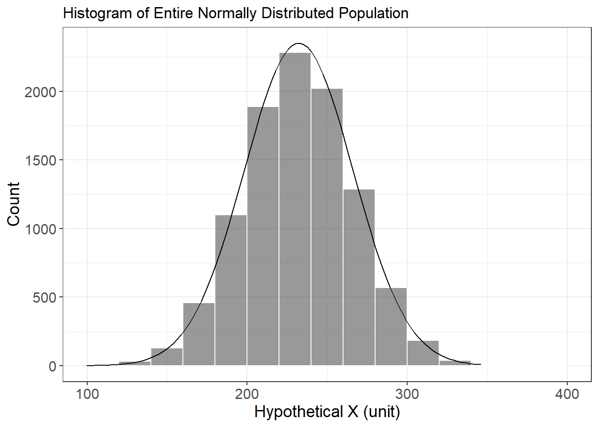
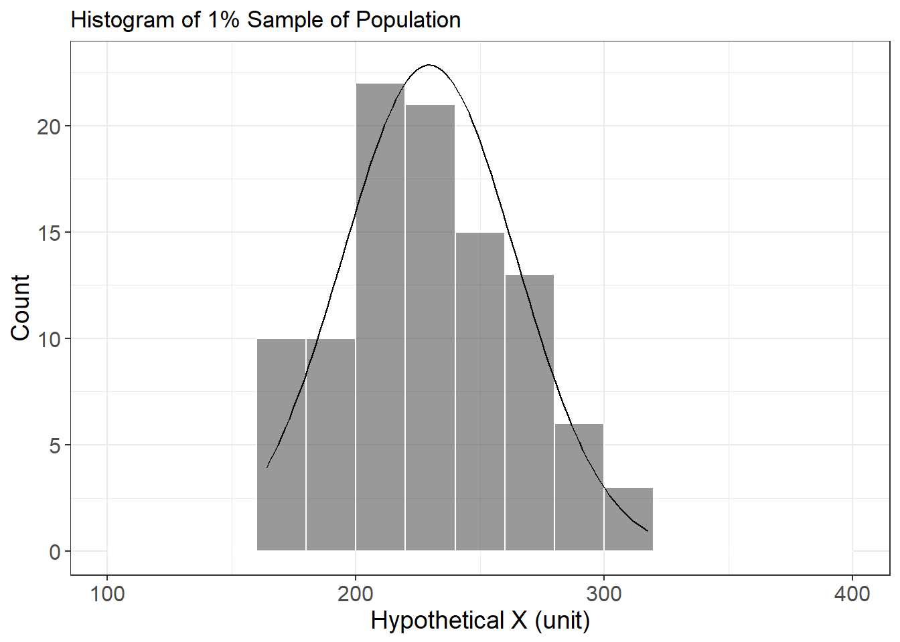
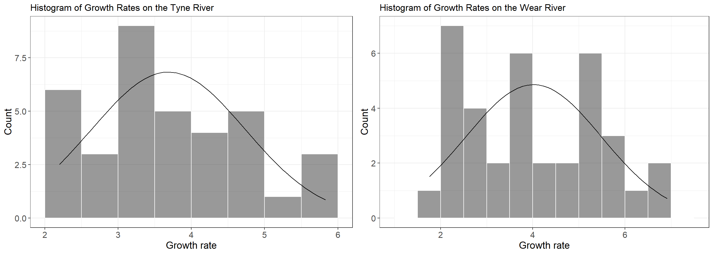
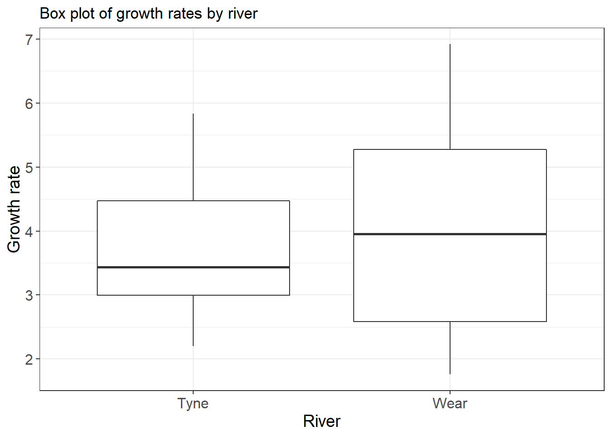

# -*- coding: utf-8 -*-
# ---------------------------------------------------------------------------
# R Assignment 2: Data Summary
# Author: Timm Nawrocki
# Created on: 2018-09-09
# Usage: Code is intended to be executed as an R markdown in RStudio.
# Description: "BIOL-A601 R Assignment 2" includes examples for summarizing data, including simple summary plots.
# ---------------------------------------------------------------------------The set up code installs libraries used in this assignment if any are not already installed. Sets working files based on user input.
# Install required libraries if they are not already installed
Required_Packages <- c("dplyr", "ggplot2", "ggpmisc", "readxl", "tidyr", "pander", "gridExtra")
New_Packages <- Required_Packages[!(Required_Packages %in% installed.packages()[,"Package"])]
if (length(New_Packages) > 0) {
install.packages(New_Packages)
}
# Import required libraries
library(dplyr)
Attaching package: 'dplyr'The following objects are masked from 'package:stats':
filter, lagThe following objects are masked from 'package:base':
intersect, setdiff, setequal, unionlibrary(ggplot2)
library(ggpmisc)For news about 'ggpmisc', please, see https://www.r4photobiology.info/For on-line documentation see https://docs.r4photobiology.info/ggpmisc/library(readxl)
library(tidyr)
library(pander)
library(gridExtra)
Attaching package: 'gridExtra'The following object is masked from 'package:dplyr':
combine# Select input files
seeds_file = file.choose()
daphnia_file = file.choose()# Define a function to generate standardized histograms
histogram = function(inData, variable, interval, range, title, x_label, y_label) {
font_size = theme(axis.title = element_text(size=14), axis.text = element_text(size = 12))
normalDist = function(x, mean, sd, n, interval) {
dnorm(x = x, mean = mean, sd = sd) * n * interval
}
plot = ggplot(data=inData, aes(variable)) +
theme_bw() +
geom_histogram(aes(y=..count..),
breaks=seq(range[1], range[2], by = interval),
colour = 'white',
fill = 'grey20',
alpha = 0.5) +
stat_function(fun = normalDist,
args = c(mean = mean(variable),
sd = sd(variable),
n = length(variable),
interval = interval)) +
labs(title=title) +
labs(x=x_label, y=y_label) +
font_size
return(plot)
}
# Define a function to generate standardized box plots
box_plot = function(inData, X, y, title, x_label, y_label) {
font_size = theme(axis.title = element_text(size=14), axis.text = element_text(size = 12))
ggplot(data=inData, aes(X, y)) +
geom_boxplot() +
theme_bw() +
labs(title=title) +
labs(x=x_label, y=y_label) +
font_size
}
# Define a function to report 95% confidence interval lower and upper bounds
confidence = function(mean, sd, n) {
error = qt(0.975, df=sample_n-1) * sample_sd / sqrt(sample_n)
upper = mean + error
lower = mean - error
return(c(upper, lower))
}# Create data frame from seeds csv file
seeds = read.csv(seeds_file, header=TRUE, stringsAsFactors = FALSE)# Summarize the seeds dataset by site for number of observations, mean weight, and coefficient of variation for weight
mean_site = seeds %>%
group_by(site) %>%
summarize(num_obs = n(), mean_weight = signif(mean(seed_wt), digits=2), site_cv = round(sd(seed_wt)/mean(seed_wt)*100, digits=0))
# Create human readable column names for table display
colnames(mean_site)[1] = 'Site'
colnames(mean_site)[2] = 'Number'
colnames(mean_site)[3] = 'Mean Weight (mg)'
colnames(mean_site)[4] = 'Coefficient of Variation (%)'
# Create output table
mean_site| Site | Number | Mean Weight (mg) | Coefficient of Variation (%) |
|---|---|---|---|
| near | 135 | 0.0030 | 33 |
| wolverine | 48 | 0.0021 | 30 |
# Create a histogram plot for seed frequency by intervals of 0.0005 mg for all sites
seed_histogram = histogram(seeds, seeds$seed_wt, 0.0005, c(0, 0.005), "Histogram of Seed Weight", "Seed Weight (mg)", "Count")
seed_histogram
# Create a box plot for seed weight by site
seed_boxplot = box_plot(seeds, seeds$site, seeds$seed_wt, "Box plot of seed weight by site", "Site", "Seed Weight (mg)")
seed_boxplot
# Compute sample mean, standard deviation, and size
sample_mean = mean(seeds$seed_wt)
sample_sd = sd(seeds$seed_wt)
sample_n = length(seeds$seed_wt)
# Calculate the 95% confidence interval
confidence_interval = confidence(sample_mean, sample_sd, sample_n)
# Report the coefficient of variation for seed weight and upper and lower bounds of 95% confidence interval
cat(paste('Coefficient of variation = ', toString(round(sample_sd/sample_mean*100, digits=0)), '%\n', 'Upper bound of 95% confidence interval is ', toString(signif(confidence_interval[1], digits=2)), ' mg\n', 'Lower bound of 95% confidence interval is ', toString(signif(confidence_interval[2], digits=2)), ' mg\n', sep=''))Coefficient of variation = 37%
Upper bound of 95% confidence interval is 0.0029 mg
Lower bound of 95% confidence interval is 0.0026 mg# Define a hypothetical population of 1,000 fish with mean length of 50 cm and standard deviation in length of 5 cm in a normal distribution
length_mean = 50
length_sd = 5
fish_n = 1000
fish_population = rnorm(fish_n, length_mean, length_sd)
fish_population = data.frame(fish_population)
# Create a histogram of fish length
fish_histogram = histogram(fish_population, fish_population$fish_population, 4, c(30, 70), "Histogram of Fish Length", "Length (cm)", "Count")
fish_histogram
# Calculate mean and standard deviation
cat(paste('Mean = ', toString(round(mean(fish_population$fish_population), digits=1)), ' cm\n', 'Standard deviation = ', toString(round(sd(fish_population$fish_population), digits=1)), ' cm\n', sep=''))Mean = 49.8 cm
Standard deviation = 5 cm# Create a hypothetical population of count data
mean = 232
sd = 34
n = 10000
population = rnorm(n, mean, sd)
sample_population = sample(population, 100)
population = data.frame(population)
sample_population = data.frame(sample_population)
# Create a plot of full population against the normal distribution curve
full_plot = histogram(population, population$population, 20, c(100, 400), "Histogram of Entire Normally Distributed Population", "Hypothetical X (unit)", "Count")
full_plot
# Create a plot of subsample against the normal distribution curve
sample_plot = histogram(sample_population, sample_population$sample_population, 20, c(100, 400), "Histogram of 1% Sample of Population", "Hypothetical X (unit)", "Count")
sample_plot
# Create data frame from Daphnia excel file
river_data = read_excel(daphnia_file)# Calculate mean, standard deviation, coefficient of variation, and upper and lower bounds of 95% confidence interval
mean_gr = mean(river_data$Growth.rate)
sd_gr = sd(river_data$Growth.rate)
cv_gr = sd_gr/mean_gr*100
upper_gr = confidence(mean_gr, sd_gr, length(river_data$Growth.rate))[1]
lower_gr = confidence(mean_gr, sd_gr, length(river_data$Growth.rate))[2]
# Report results
cat(paste('Mean = ', toString(round(mean_gr, digits=2)), '\n', 'Standard deviation = ', toString(round(sd_gr, digits=2)), '\n', 'Coefficient of Variation = ', toString(round(cv_gr, digits=0)), '%\n', 'Upper bound of 95% confidence interval = ', toString(round(upper_gr, digits=4)), '\n', 'Lower bound of 95% confidence interval = ', toString(round(lower_gr, digits=4)), '\n', sep=''))Mean = 3.85
Standard deviation = 1.28
Coefficient of Variation = 33%
Upper bound of 95% confidence interval = 3.8521
Lower bound of 95% confidence interval = 3.8518# Summarize the growth rate dataset by river for number of observations, mean weight, coefficient of variation, upper 95% confidence interval, and lower 95% confidence interval
mean_river = river_data %>%
group_by(River) %>%
summarize(num_obs = n(), mean_rate = signif(mean(Growth.rate), digits=4), river_cv = round(sd(Growth.rate)/mean(Growth.rate)*100, digits=1), upper_ci = round(confidence(mean(Growth.rate), sd(Growth.rate), length(Growth.rate))[1], digits=5), lower_ci = round(confidence(mean(Growth.rate), sd(Growth.rate), length(Growth.rate))[2], digits=5))
# Create human readable column names for table display
colnames(mean_river)[1] = 'River'
colnames(mean_river)[2] = 'Number'
colnames(mean_river)[3] = 'Mean growth rate'
colnames(mean_river)[4] = 'Coefficient of Variation (%)'
colnames(mean_river)[5] = 'Upper CI'
colnames(mean_river)[6] = 'Lower CI'
# Create output table
mean_river| River | Number | Mean growth rate | Coefficient of Variation (%) | Upper CI | Lower CI |
|---|---|---|---|---|---|
| Tyne | 36 | 3.686 | 28.5 | 3.68601 | 3.68571 |
| Wear | 36 | 4.018 | 36.8 | 4.01810 | 4.01780 |
# Subset the river data to include only observations for the Tyne
tyne_data = subset(river_data, River=='Tyne')
# Create a histogram plot for growth rate frequency for the Tyne
tyne_histogram = histogram(tyne_data, tyne_data$Growth.rate, 0.5, c(2, 6), "Histogram of Growth Rates on the Tyne River", "Growth rate", "Count")# Subset the river data to include only observations for the Wear
wear_data = subset(river_data, River=='Wear')
# Create a histogram plot for growth rate frequency for the Wear
wear_histogram = histogram(wear_data, wear_data$Growth.rate, 0.5, c(1, 7.5), "Histogram of Growth Rates on the Wear River", "Growth rate", "Count")# Combine plots into a single output and display
plot_grid = grid.arrange(tyne_histogram, wear_histogram, nrow=1)
# Create a box plot for growth rate by river
river_boxplot = box_plot(river_data, river_data$River, river_data$Growth.rate, "Box plot of growth rates by river", "River", "Growth rate")
river_boxplot